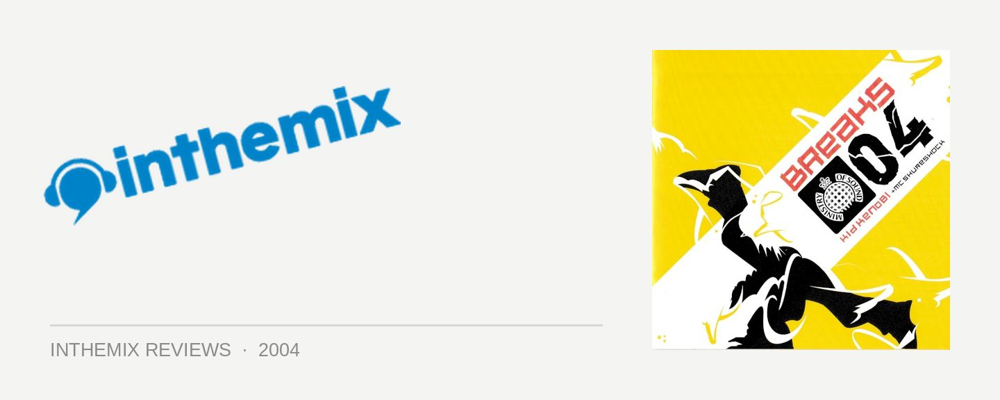

Various Artists - Breaks04: Kid Kenobi & MC Shureshock
(Ministry of Sound/EMI)
It’d be the most obvious thing to do to start this review with a reflection on Kid Kenobi’s popularity. Earning the #1 place in the Technics inthemix50 DJ poll for the last two years running, Kid Kenobi is a constant fixture at both Sydney’s biggest breaks parties and other gigs around the nation. But the interesting thing is that none of this popularity is unwarranted – Kid Kenobi really is all that, and has earnt every inch of praise heaped upon him. An effortless crowd pleaser whose technical skills really do stand up on an international level, he’s without a doubt one of the greatest breaks DJs in the world. So now comes Breaks 04, Kid Kenobi’s latest compilation for Ministry of Sound and a collection of all the biggest and best tunes heard in the clubs this year. Unlike his previous double CD compilations, which were comprised of upfront breaks and chill-out selections respectively, the formula is slightly different this time around. While the first CD focuses on the funk and hip-hop side of breaks, the second delves into the more techy and nu-school selections. For an annual “Greatest Hits” formula, this makes a lot more sense – you didn’t exactly hear a lot of downbeat or chillout while out clubbing this year, did you? This decision was indeed a wise one, because Breaks 04 is by far Kid Kenobi’s best release yet.
Kid Kenobi’s personal reflection on the funkier side of breaks this year begins with the song that made every Field Day goers’ dreams come true this New Years Day, Krafty Kuts and A. Skillz’s joyfully happy Gimme The Breaks with Kurtis Blow on vocals. Following that the hits come flying fast, with the CD comprised completely of unrestrainedly funky, shake-your-booty breaks. And the mixing is damn spankin’ amazing – if it really ever was in question, Kid Kenobi really has the skills on the decks. It’s the way he manages to keep the beats rolling so smoothly, keeping your interest piqued completely and making you just want to get up and dance around your bedroom in spite of anything else going on around you. He flawlessly overlaps the beats, basslines and acapellas in a way that always screams “par-ty”, and the thrill felt when you first stick it on your player is something that really has to be experienced. There are numerous treasures on the CD: some of the bombs featured include the Stanton Warriors mix of Chicken Lips’ He Not In, the Freestyler’s Push Up, Stylophonic’s Way of Life and the relentless funky drive of Friendly’s mix of Nobody Gonna Stop Us - amongst many, many others. You really couldn’t ask for a better representation of the year that was 2004 when it comes to funked-up broken beats, and from start to finish it’s utter brilliance.
Giving the punters value for their money, the second CD changes tack by running through the whole gamut of tech and progressive sounds popular in breaks today, brimming with rollin’ synthetic beats and driving nu-school funk. Reminding us of how much cutting-edge innovation has been present in breaks in recent times, the tracklisting reads like a who’s-who of big name nu-school producers: General Midi, Elite Force, Lee Coombs & Rennie Pilgrim all make an appearance. To capture it in words it would be to evoke all of the phrases used to describe only the best nu-school: smooth, layered, sophisticated and definitely boundary pushing. Complimented by the ultra smooth skillz of MC Shureshock, the darker nature of the sounds means that it’s not as instantly accessible as the first CD – but quickly it digs its heels in after a few listens. Again it’s track after track after phenomenally huge track, particularly towards the business end of the mix where it really pounds away relentlessly with the nu-school anthems. Kid Kenobi’s own remix of Ferry Corsten’s Rock Your Body Rock is dropped, followed up quickly by Meat Katie & Christian J’s club smashing Turn Me Out, the Plump DJs’ anthemic The Gate and the rockingly amazing (and Puff Daddy sampling) Party People.
While Breaks 04 is nothing if not rock solid, even dedicated Kid Kenobi fans may be hesitant due to the fact they’ve hear almost everything on this release. This isn’t a CD of fresh underground tunes for the chin stroking elite – but those looking for a collection of all of the biggest and best tunes from the past year couldn’t possibly do any better. Showing how smokin’ hot breaks have been this year, all of the tunes are bursting with fresh creative ideas, and it’s just so satisfying having them in a format so expertly mixed – it gives you the chance to fall in love with them all over again. Kid Kenobi is for once someone worthy of all the overblown hype: he certainly knows how to market himself, but he’s more than a pretty face. The inspired decision to cover the whole available selection of party breaks, combined with Kid Kenobi’s impeccable track selection and DJing skills, makes Breaks 04 one of the finest breaks compilations to ever see the light of day. So you can wipe all the other average compilations taking up space on your shelf – because Breaks 04 is all you’ll ever need to remember the year that was 2004.